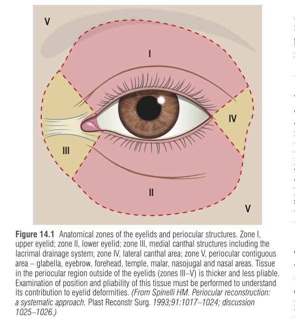
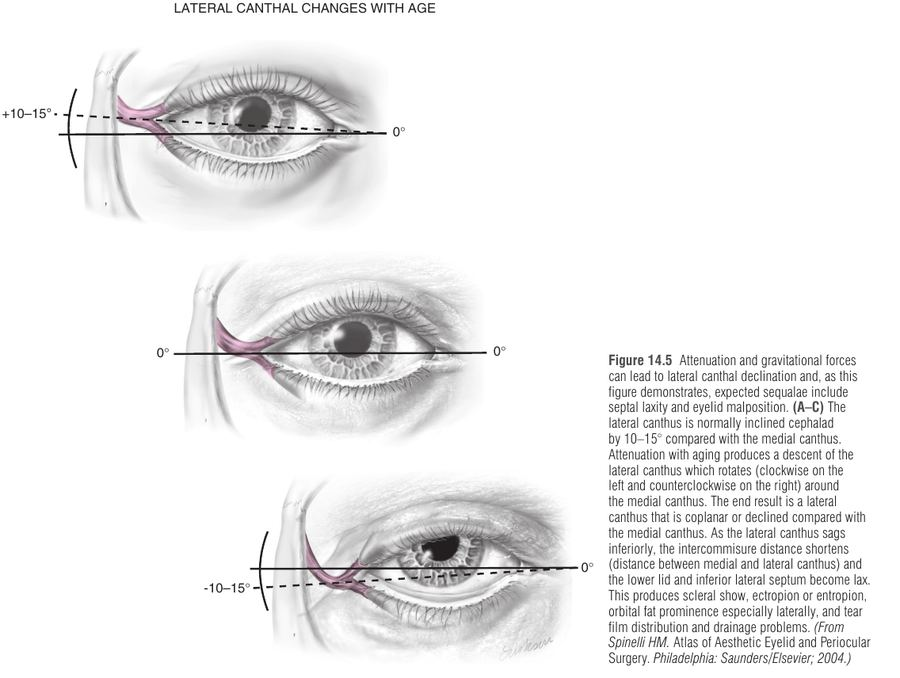
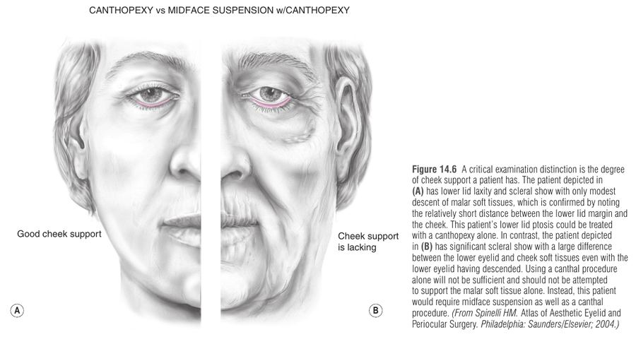
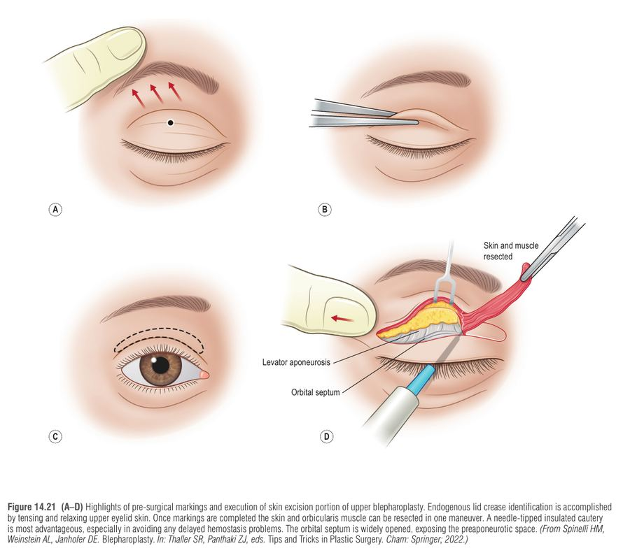
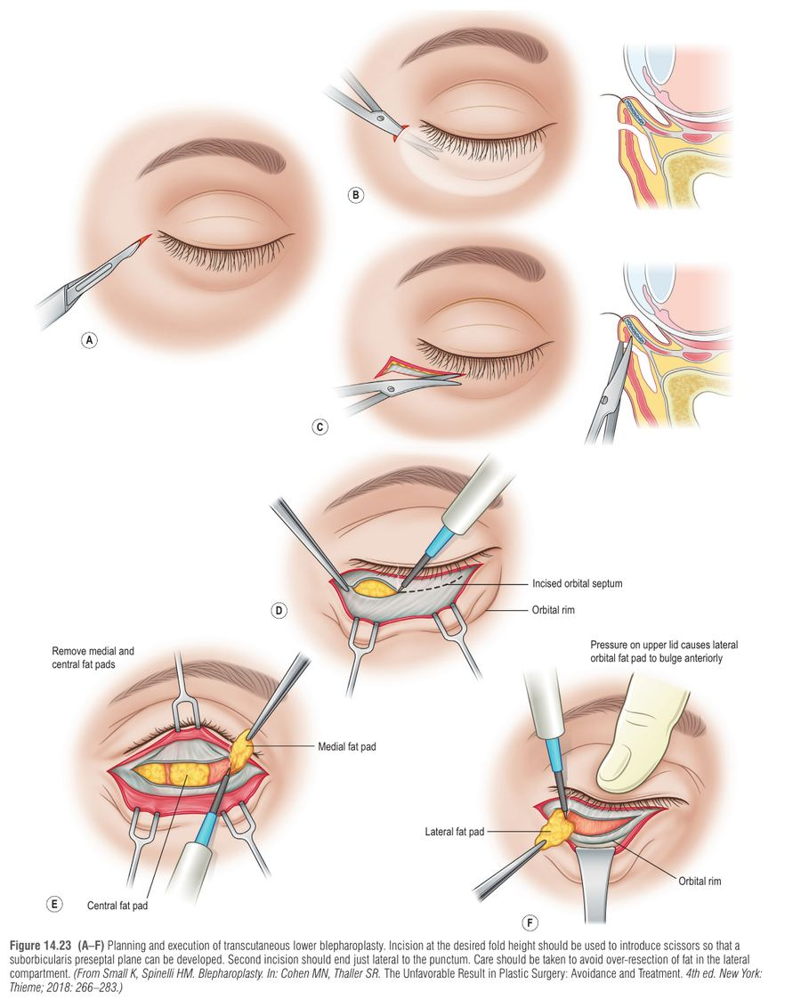
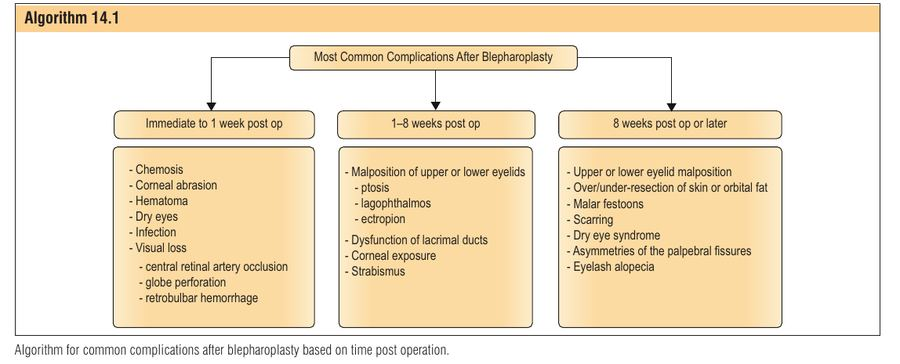

בלפרופלסטיקה היא אחת הפעולות האסתטיות השכיחות ביותר בארה"ב (כ-325,000 ניתוחים ב-2020; 85% נשים, 91% מגיל 40 ומעלה). ככל שיש יותר ניתוחים ראשוניים, יש יותר ניתוחי תיקון. הסיבה השכיחה ביותר לניתוח משני היא malposition של העפעף (בעיקר העליון), ולכן הפרק הוא בעצם שיעור באנטומיה תומכת של העפעף ובמה קורה כשהיא נפגעת.
רוב ה-malposition נפתר מעצמו תוך 4-6 שבועות (בצקת). אם הקרנית אינה מאויימת – ממתינים. בינתיים: הגנת קרנית (טיפות סיכוך, משקפי הגנה, הדבקת העפעף בלילה). אם הקרנית כן מסוכנת – מטפלים מיד. התוצאות הטובות ביותר בניתוח משני מושגות 6 חודשים עד שנה אחרי הניתוח הראשון.
העפעפיים הם סליל התלוי באוויר בין הגיד הקנתלי המדיאלי ללטרלי; גם מילימטרים של תזוזה בנקודת החיבור משבשים את מיקום העפעף ותפקודו. אנטומיה חיונית:
| מבנה | עיקר |
|---|---|
| עור | הדק בגוף; ירידת קולגן מסוג I ועלייה בקולגנאז עם הגיל ⇒ דילול וקמטים |
| Orbicularis oculi | סוגר העפעף: חלק orbital (סגירה חזקה), palpebral (pretarsal + preseptal – סגירה/מצמוץ), lacrimal (משאיב דמעות). עוגן ב-orbital retaining ligament ובעיבוי לטרלי |
| טרסוס | עליון חצי-סהר, כ-10 מ"מ במרכז; תחתון 3.5-5 מ"מ. מכיל בלוטות meibomian (שמן המונע התאדות דמעות) |
| Orbital septum | מתחבר ל-levator כ-10-15 מ"מ מעל הטרסוס; בתחתון ל-capsulopalpebral fascia כ-5 מ"מ מתחתיו; ב-arcus marginalis מתחבר לפריאוסט |
| שומן אורביטלי | עליון: 2 כריות (מדיאלית – לבנה וקשה יותר, מרכזית), מופרדות ע"י ה-superior oblique; בלוטת הדמעות במדור הצדדי. תחתון: 3 כריות (מדיאלית, מרכזית, צדדית): ה-inferior oblique מפריד בין מדיאלית למרכזית, ה-arcuate expansion בין מרכזית לצדדית |
| מכווצי העפעף | עליון: levator palpebrae + שריר מילר (נמצא בלמלה האחורית של האפונורוזיס); תחתון: capsulopalpebral fascia (נקשרת ל-Lockwood, נצמדת 5 מ"מ מתחת לטרסוס) |
| Lateral canthus | זווית אידיאלית 10-15° מעל הגיד המדיאלי; מתחבר ל-Whitnall's tubercle כ-3 מ"מ אחורית לשולי האורביטה. רטינקולום לטרלי: levator horn, orbicularis, Lockwood, check ligament של ה-lateral rectus |
| Medial canthus | 3 עלים (קדמי, אחורי, אנכי); קרוב לנקבים (canaliculi) – סכנת פגיעה בהם בתזוזה |
כל מרכיבי הרטינקולום הלטרלי חייבים להיות מטופלים לפני הזזת הקנתוס; ובמדיאלי יש להזיז את כל המבנה כיחידה ולשמור על ה-canaliculi.

רפיון ה-orbicularis והרצועות + כוח הכבידה ⇒ ירידת הקנתוס הצדדי, קיצור המרחק הבין-קנתלי, רפיון הספטום, פריצת שומן צדדי (pseudoherniation), ו-scleral show/ectropion/entropion. גם הגבה יורדת (brow ptosis) והקשר בין כל חלקי המישור הפרי-אורביטלי קובע שחובה להעריך גבה ולחי ולא רק את העפעף. בעפעף האסייתי (levator נקשר לעור נמוך יותר) קפל נמוך הוא אנטומי תקין.
מיקום העפעף התחתון נקבע ע"י איזון בין כוחות תמיכה פנימיים (טרסוס, גידי הקנתוס, סליל ה-orbicularis – וקטור נטו אחורי-עליון) לבין כוחות משיכה חיצוניים (הזדקנות, ניתוח, לייזר, טראומה, ירידת הלחי). כריתת עור ושריר יתר בניתוח ראשון, או צלקת ב-lamella הקדמית/האמצעית, או denervation של ה-orbicularis, מטה את האיזון ⇒ scleral show, ectropion/retraction ולעיתים chemosis וייבוש קרנית.
כשל התמיכה בעפעף התחתון

מחלת בלוטת התריס (Graves – פרופטוזיס, retraction), עיניים יבשות, עדשות מגע, ניתוח רפרקטיבי, blepharitis, הרפס זוסטר, ניתוחי עיניים/עפעפיים קודמים (תאריך, גישה, חומרים). חשוב להבחין בין רצון אסתטי למציאות פיזיולוגית – טעות להגדיל חשיפת קרנית בחולה עם עין יבשה.
| בדיקה | מה בודקים / ערך |
|---|---|
| מיקום עפעפיים | עליון חוצה את הקשתית ב-50%; תחתון על/מעל ה-limbus (ללא scleral show) |
| קפל עליון | אוקצידנטלי 6-8 מ"מ מעל השוליים; deep-set או levator dehiscence 8-13 מ"מ; אסייתי נמוך |
| Schirmer (נייר No. 41, חדר חשוך, אחרי הרדמה) | 0-9 מ"מ מפיק מעט; 10-20 בינוני; 21-30 גבוה (מעל: חשד לחסימת נאסולקרימלי – epiphora) |
| Fluorescein (TBUT) | פיצוץ סרט הדמעות; ערך תקין מעל 20 שניות |
| Snap-back / distraction | ניתוק מעל 8 מ"מ או חזרה איטית = חוסר שלמות טרסו-ליגמנטרית |
| וקטור/מרחק עצם-לחי | <1 ס"מ (עין שקועה) ⇒ קנתופלסטי; >1 ס"מ (עין בולטת, וקטור שלילי) ⇒ צורך בתמיכת midface |
| חדות ראייה, אסטיגמציה | לתעד מראש; ניתוח משנה וקטורי לחץ על הקרנית |


| גישה / טכניקה | מתאים ל | הערות |
|---|---|---|
| Transconjunctival (preseptal עדיף; retroseptal אפשרי) | מטופל צעיר ללא ptosis של midface | פחות סיכון ל-retraction; תפר conjunctiva יחיד צדדי נגד cysts / גירוי |
| Transcutaneous (skin-muscle flap) | עודף עור/שריר | כריתה שמרנית, וקטור לטרלי-קפלי; הגנה על ה-inferior oblique לפני נגיעה בשומן |
| Canthopexy | רפיון קל | תליה/קיצור בלי חיתוך אלמנטי הגיד |
| Canthoplasty (lateral tarsal strip) | רפיון חמור או כישלון קנתופקסי | canthotomy + שחרור הרטינקולום, tarsal strip מקובע ל-Whitnall's בתפר 4-0 לא נספג; סיום ב-commissuroplasty (תפר 6-0) ליישור קווי ה-Grey |
| Midface suspension / advancement | וקטור שלילי, מרחק >1 ס"מ | SOOF ושומן הלחי לתליה ב-deep temporal fascia |
| Spacer graft (palatal, nasal septal/cartilage) + skin graft / flap | חסר ב-lamella האמצעית/קדמית | לאחר ניסיונות קודמים שנכשלו |
לצד זאת: ב-involutional entropion הסיבה היא dehiscence של מכווצי העפעף + override של ה-septal orbicularis על הטרסוס, ולכן העפעף מתגלגל פנימה בעת מצמוץ.

| סיבוך | עיקר | טיפול |
|---|---|---|
| Retrobulbar hematoma | שכיחות כ-1:2000; אובדן ראייה כ-1:22,000. כאב, proptosis, ירידת חדות, מצב אישון, ירידה בתנועתיות, גלובוס קשה. דימום מהשומן השטחי המחובר לעמוק דרך מחיצות; יתר לחץ דם, aspirin, ויטמין E, הרדמה | חירום: canthotomy + cantholysis (קודם התחתון), סטרואידים, hyperosmolar (mannitol), acetazolamide, טיפות (timolol, dorzolamide, brimonidine); לא מכסים עין עם פצע; במקרים קשים דקומפרסיה של דופן אורביטלית תחתונה / paracentesis |
| פגיעה בגלובוס בהרדמה | נדיר; שינוי חד בראייה או בסימטריית האישון | עצירת הניתוח, ייעוץ עיניים מיידי. מניעה: corneal shield וכיוון המחט הרחק מהגלובוס |
| פגיעה בשרירי עין | הנפוץ ביותר: inferior oblique (השריר היחיד שמתחיל קדמית במסלול; ורוד-סגול בין כריות המדיאלית והמרכזית). Superior oblique – פגיעה ב-trochlea | זיהוי לפני נתיחה, הימנעות מקוטר יתר באזור trochlea; strabismus |
| שחיקת קרנית | רוב החלמה תוך 24 שעות; מכשירים, תפרים, עדשות הגנה | משחת אנטיביוטיקה; לא טיפות הרדמה (ניורוטרופי ulcer) |
| Wound dehiscence / hematoma | סגירה לא מספקת, פירוק תפרים | חידוש; הסרת תפר conjunctiva לניקוז ב-"flash hemorrhage" |
| Chemosis | אחרי ניתוח / עם retraction | שמרני תחילה (טיפות, מניעת גירוי), לאחר מכן tarsorrhaphy / הדבקה זמנית |

דמייני שאת מושכת בובה מהעפעף: קודם קנתוס (אצבע אחת), אז מידפייס (אצבע שנייה על הלחי), ורק אם אין ברירה – ספייסר (מרפד/"כרית" מתחת לעפעף).
Schirmer: 0-9 נמוך, 10-20 בינוני, 21-30 גבוה. נמוך = להיזהר מכריתה נוספת, ומגבילים הגדלת חשיפת קרנית.
אישה בת 58 פנתה אחרי שלושה ניתוחי בלפרופלסטיקה בעבר. בבדיקה: scleral show בעפעף התחתון הימני, chemosis, שקע בעפעף העליון וקפל גבוה (10 מ"מ) עם ptosis של 3 מ"מ, ו-snap-back איטי; ה-distraction גדול מ-8 מ"מ. כאשר הרמת הקנתוס באצבע לא תיקנה לגמרי, והרמת הלחי באצבע שנייה תיקנה את הסימנים. מבחן Schirmer: 8 מ"מ.
מקור: Neligan, Plastic Surgery 5th ed., Vol 2, Ch. 14 (Aschen & Spinelli). הסיכום מבוסס על הפרק בלבד.